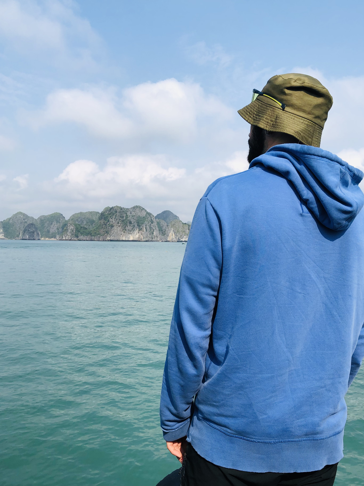

Presentazione
Sono Alessandro, ho 26 anni e vengo da un piccolo paesino in provincia di Perugia, in Umbria.In passato ho già avuto modo di vedere qualcosa riguardo alla programmazione in alcuni corsi e anche lavorativamente.
Principalmente ho trattato alcune cose di backend, che, devo dire, è anche la parte che mi affascina di più.
I miei Hobbie
Ho parecchi hobbie, e a volte mi scordo di averli.Mi piace la natura e le lunghe camminate, mi piace la musica, ascoltarla e farla.
Mi piace la tecnologia e le sue nuove frontiere, sapere che c'è sempre qualcosa che bolle in pentola.
Mi piace leggere libri per prendermi il mio tempo e staccare un pò da tutto e tutti per immergermi nella mia fantasia.
Mi piace viaggiare, quando è possibile, ed esplorare cosa c'è al di fuori di quello che chiamiamo quotidianità.
Insomma, quelle cose che piacciono un pò a tutti.
Questa è una correzione:
Dimenticavo, mi appassiona anche il mondo della vinificazione e della birra, ho provato anche io a produrre qualcosa ed è stata una bella soddisfazione.
Una parte di me
Descriversi secondo me è sempre difficile, ma tenterò di farlo in maniera coraggiosa.Sono una persona curiosa, che ancora si affascina e si stupisce guardando il paesaggio che ho guardato per tutta la vita.
Che ogni volta che si sta in compagnia è una festa dove non può mancare il buon umore.
Mi piace essere propositivo e vedere il bicchiere mezzo pieno...di vino.
Scherzi a parte vista così sono una persona fantastica, ma non è propriamente così ho alti e bassi come tutti.
Mi piace stare da solo quando serve, rispondo male quando sono stanco e faccio ghosting ai miei amici quando non ho voglia di uscire. 